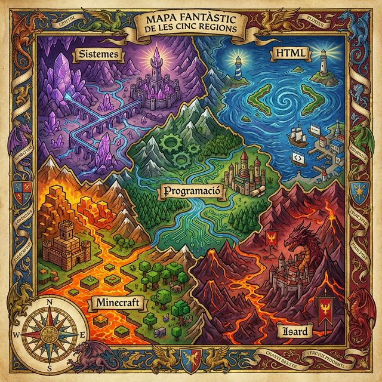
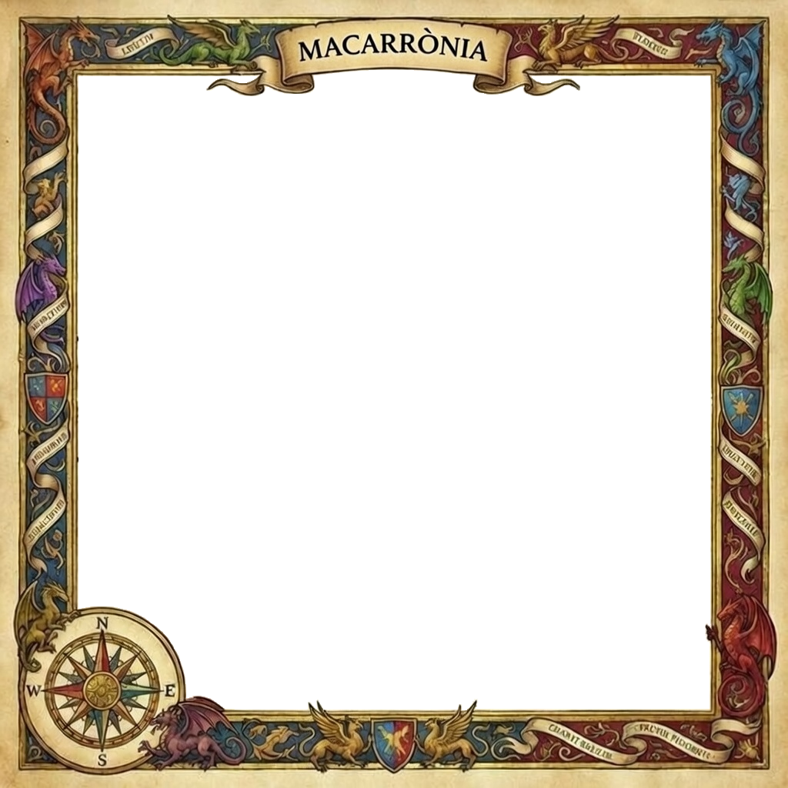

Prova 2


L'Endevinalla del Guardià
El mapa resta ocult a les ombres. Només el foc pot revelar el camí.
Pren la primera runa de cada paraula.
Cinc camins es mostren, però només un ordre és veritable.
Amb la teva torxa, explora el mapa i descobreix quin és el teu destí.